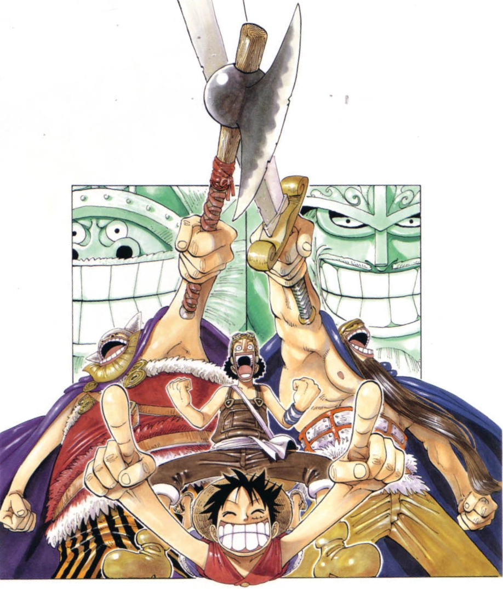

Alabasta Saga
Reverse Mountain Arc

Whisky Peak Arc

Diary of Koby-Meppo Arc

Little Garden Arc

Kru tiba di pulau prasejarah Little Garden dan bertemu dua raksasa, Dorry dan Brogy,
yang telah bertarung selama 100 tahun. Luffy dan yang lainnya melawan agen Baroque
Works, termasuk Mr. 3 yang memiliki kekuatan Buah Iblis Doru Doru no Mi untuk
menciptakan lilin.
Episode: 70-77
Drum Island Arc
Alabasta Arc
Post-Alabasta Arc